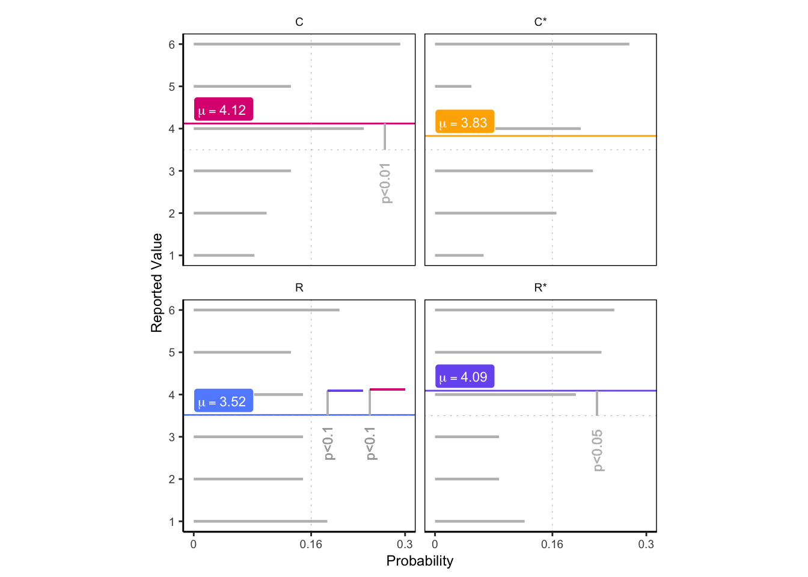

Color me honest!
Carina I. Hausladen ![]()
Setup
Overview
In a preregistered laboratory experiment, we collected a total of 229 observations (between 55 and 58 in each condition, excluding color-blind participants and those who failed to report in time in the time pressure conditions). The data sample contains 61 % females,23 % business administration and economics students. The average age is 24.4 years (SD = 7.7).
A manipulation check confirms that and participants reported significantly higher levels of perceived pressure than their counterparts in conditions and (Table 4).
Time pressure effect depends on the die
We never observe an average die roll report below the `honesty reference’ of 3.5 (Figure 1). In particular, there is evidence of dishonest behavior in conditions C (t= 2.9, pval=0.005) and R* (t= 2.6, pval=0.013). In line with our conjecture outlined in the introduction, we find the effect of time pressure to depend on the type of the die used. There is more dishonesty under time pressure with the regular die (t= 1.9, pval=0.062) but no such effect can be found with the color die. Also note that without any time pressure, the use of the color die results in higher reports (t= -1.7, pval=0.085). These findings are corroborated by an ordered logit regression estimated using Bayesian inference.
Color die evokes curiosity
As part of the experimental procedure, we elicited individual motivations behind exploring multiple options. In particular, the two authors independently classified these self-reports as either or (Cohen’s \kappa= 0.7, p-value= 0). Overall, 36 participants stated to have checked more than one option.
There was a significantly higher proportion of participants motivated by curiosity in conditions C/CP than in R/RP ({\chi}^2= 6.6, p = 0.01), which explains the observed difference in the effect time pressure has on reported die rolls. However, for a given die type, there is no significant effect of time pressure on the distribution of motivations (Color: {\chi}^2= 0, p = 0.5; Regular: {\chi}^2= 0, p = 0.5).
| C | C* | R | R* | total | |
|---|---|---|---|---|---|
| Self-report | |||||
| 1 | 1 | 1 | 3 | 1 | 6 |
| 2 | 15 | 8 | 2 | 1 | 26 |
| 3 | 2 | 0 | 1 | 1 | 4 |
| Trajectory Type | |||||
| A | 35 | 46 | 49 | 47 | 177 |
| A<O | 8 | 6 | 5 | 5 | 24 |
| A=O | 15 | 6 | 1 | 1 | 23 |
| A>O | 0 | 0 | 3 | 2 | 5 |
Trajectories reveal distinct behavioral types


During the decision stage in the experiment we tracked the individual mouse cursor trajectories. This allows us to classify the participants into four distinct behavioral types based on the initially explored option (A) and ultimately reported roll (\Omega). A<\Omega explores multiple options and reports a higher roll than the initial one. Their average reported roll is significantly higher than that of the other types (W= 1442.5, p= 0, Fig 2C) and we interpret such behavior as dishonest.
| A | A<O | A=O | A>O | |
|---|---|---|---|---|
| curiosity | 1 | 7 | 18 | 0 |
| other | 1 | 1 | 2 | 0 |
| payoff | 2 | 3 | 0 | 1 |
If we contrast the behavioral types with the aforementioned self-reported motivations (Table 2), we can see that types A\leq\Omega are represented mostly by participants motivated by curiosity whereas type A is dominated by those motivated by payoff (Fisher’s exact test, simulated p= 0.004).
One can also compare our behavioral types to the classification in who use the categories of honest, income maximizers and partial liars to describe their participants. Following their identification strategy, our types A and A=\Omega would correspond to honest, A<\Omega participants with reports lower than 6 would correspond to partial liars and A<\Omega participants reporting 6 would correspond to `income maximizers’.Our estimates suggest that the share of honest participants is considerably higher than reported before (@tbl:3).
| honest | partial_liar | income_max | |
|---|---|---|---|
| Fischbacher | 33 | 38 | 39 |
| Fischbacher | 47 | 26 | 38 |
| Fischbacher | 50 | 29 | 32 |
| Fischbacher | 31 | 44 | 36 |
| C | 86 | 3 | 10 |
| C* | 90 | 5 | 5 |
| R | 86 | 3 | 3 |
| R* | 87 | 4 | 5 |
Trajectories provide insights into the dynamics of the decision process
Initiation Time

Concerning initiation time, we find significant differences between the treatments. The average initiation time in C is higher than in CP (W = 1048.5, p= 0). However, there is no difference between R and RP (W = 1776.5, p= 0.298). On the other hand, the average initiation time in R* is higher than in C* (W = 1249, p= 0.047). This implies that reporting the die roll was easiest in C* and most difficult in C (Fig 3A).

We also note a number of interesting findings across all four treatments. Reporting a roll of 4 is associated with the highest initiation time relative to all other reports combined (W=3605, p-value= 0.066). This can be explained by individuals engaging in partial lying under the hypothesis that telling the truth and lying fully both require less effort.

The A=\Omega type exhibits the highest initiation time relative to all other types combined (W=1821.5, p-value= 0.035). On the other hand, the A<\Omega type is not statistically different from the rest (W=2757.5, p-value= 0.834). The pattern implies that it takes more effort to be honest, and it may as well have turned out to be the other way around.

Between the two motivations to explore reported by the participants, curiosity is associated with a higher initiation time than payoff (W=109, p-value= 0.234), which is to be expected.
AUC

The average area under the curve (AUC) is significantly larger in R* than in R (W=695, p-value= 0), which indicates a greater level of response conflict in the decision-making process.
Velocity

Furthermore, the R* group displayed greater peak (maximum) velocity than the R group, indicating a greater level of commitment, vigor, and impulsiveness for action (W=822, p-value= 0.011).
Idle and Movement Time


Note that for the subsequent analysis I only use types A. At the same time, the former exhibit a significantly lower overall mouse movement time than the latter (W=1613, p-value= 0) without any difference in idle time.
Appendix
| Jena | Bonn | overall | |
|---|---|---|---|
| observations | 88.0 | 146.0 | 234.0 |
| sessions | 8.0 | 12.0 | 20.0 |
| cblind | 1.0 | 2.0 | 3.0 |
| failed | 1.0 | 2.0 | 3.0 |
| % females | 60.0 | 61.0 | 60.5 |
| mean age | 22.2 | 25.8 | 24.0 |
| Test Results | ||||||||
| Group 2 | Test | Pressure | D-Pressure | Speed | ||||
|---|---|---|---|---|---|---|---|---|
| W | P-value | W2 | p.value2 | W3 | p.value3 | |||
| R | R* | less | 1,076 | 0.00 | 962 | 0.00 | 1,428 | 0.15 |
| C | C* | less | 1,342 | 0.03 | 1,218 | 0.00 | 1,638 | 0.40 |
| R* | C* | two.sided | 1,636 | 0.82 | 1,488 | 0.54 | 1,752 | 0.35 |
| color | count |
|---|---|
| blue | 30 |
| green | 36 |
| brown | 2 |
| pink | 14 |
| yellow | 16 |
| grey | 37 |
| none | 53 |
We found that mouse movements are unlikely to be driven by other factors than the payoff related to the color. To control for possible other motives for a participant’s choice of color, we asked them to report their favorite color. Only 12.931 % of the participants reported their favorite color. A binomial test shows that the probability of success (favorite colors reported) is not significantly different from a random choice (p-value = 0.32).
| CRT | Chi_Square | df | p_value |
|---|---|---|---|
| bat and ball | 8 | 4 | 0.09 |
| lily pads | 4 | 2 | 0.14 |
| machine | 8 | 4 | 0.09 |
Participants were asked to self-report whether they checked more than one option. Additionally, mouse trajectories were analyzed to determine the exact number of options checked by each participant. A number on the clock dial was considered checked if the mouse cursor crossed it during the task.